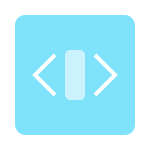

Frontend Development
- HTML: Intermediate level knowledge, capable of creating functional web application structures
- CSS: Intermediate knowledge of attributes and properties, able to customize front-end designs
- JavaScript: Entry-level proficiency, capable of creating functional scripts independently using documentation
Project Management & Version Control
- Agile Methodology: Familiarity with Agile principles and practices, including Scrum and Kanban
- Project Management Tools: Proficient in using tools like Jira for project management and issue tracking
- GitHub/BitBucket: Proficient with push, pull, and merge request operations within projects
- Team Collaboration: Experience in working in a team environment, capable of communicating effectively and resolving conflicts
- Jira: Advanced knowledge of Jira and JQL, skilled in creating statistical dashboards alongside regular issue tracking
DevOps & Testing

- CI/CD: Proven experience working in continuous integration/continuous deployment projects
- JMeter: Capable of creating functional load testing solutions for web applications
- Postman: Intermediate knowledge of Postman tool and HTTP request handling
- REST API: Experienced in testing REST APIs using various HTTP tools at an intermediate level
- TeamCity: Applied TeamCity in the gaming industry to deploy game servers across multiple data centers
Database Management

- SQL/MongoDB: Certified SQL user capable of creating databases and relational database structures
- Experience with: MySQL, MongoDB, and Firebase databases
Monitoring & Cloud

- Kibana/DataDog: Intermediate knowledge using these tools to monitor logs and identify root causes of issues
- AWS: Intermediate knowledge of AWS tool suite, with experience using DynamoDB, API Gateway, and Lambda functions